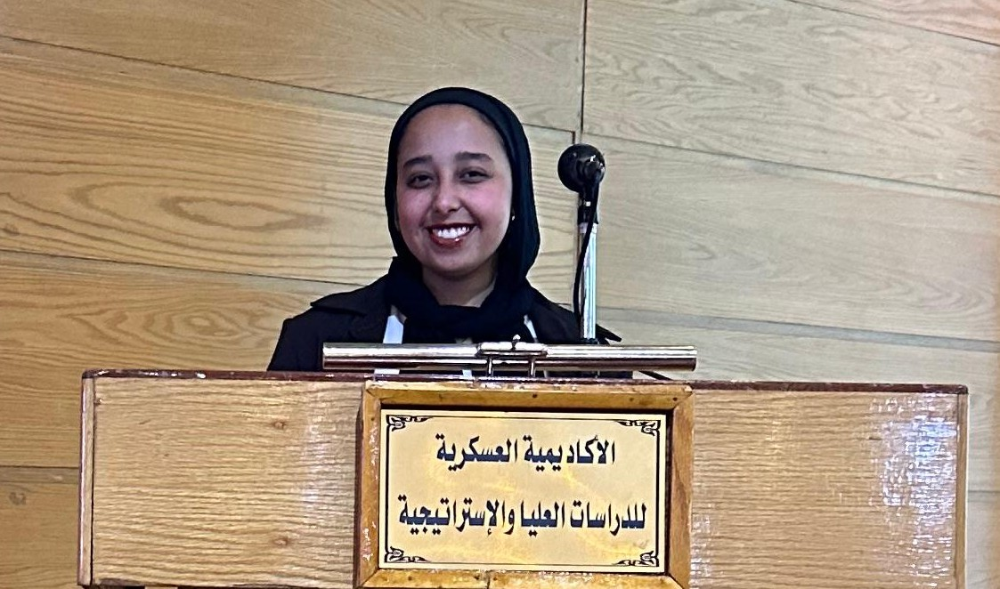

Aliaa Nagdy

Summary
I’m a junior Computer Science student at Nile University with a passion for technology and learning.
I enjoy building projects, solving problems, and exploring new areas like AI and web development.
I’m a fast learner, a team player, and always excited to improve my skills
Education
- Bachelor of Science in Computer Science
Nile University
2022 – Present
- AI & Data Science Diploma
AMIT Learning (Ongoing)
Covers Python, SQL, Data Analysis, Machine Learning, Deep Learning, Computer Vision, and NLP
- Full Stack Web Development Course
Udemy – Angela Yu (Ongoing)
Covers HTML, CSS, JavaScript, Node.js, MongoDB, React
Experience
- Intern – Petrobel (Belayim Petroleum Company)
July 7 – July 18, 2024
- Gained exposure to petroleum industry workflows and field operations
- Attended technical sessions and practical training
- Received certificate of completion
- Sales Lead – LapBoost Initiative
Volunteer Role, 2024
- Led communication with clients and partners for device distribution
- Coordinated outreach activities and team tasks
- Received certificate for outstanding contribution
Courses & Certifications
- Strategic and National Security Awareness Course
Nasr Higher Military Academy – Egypt
Duration:(February 24 - March 2, 2024)
- Focused on strategic thinking, national security awareness, and leadership responsibility
- Held at the Nile University
- Certificate awarded upon successful completion
Projects
- Amazon Sentiment Analysis – Big Data Project
Used Hadoop and Apache Spark to classify sentiment in Amazon reviews. Applied PySpark, data preprocessing, and machine learning models.
- Modeling Internet Resilience Using Lighting Stability – Data Analysis Project
Analyzed satellite light data and internet speeds to model resilience across regions. Used Python, Pandas, and statistical modeling.
- Lost and Found System – Python & SQL
Built a Tkinter-based system with MySQL backend for reporting and managing lost/found items. Included admin dashboard and user roles.
- Checkpoint and Restore in xv6 – Operating Systems Project
Implemented process checkpointing and restoration in the xv6 OS kernel. Managed memory state saving, trap frames, and system call extensions.
- Airplane Seat Reservation System – C++ & Data Structures
Developed a reservation system using C++ and core data structures (arrays, linked lists, trees) to simulate airline seat management.
- Personal Resume Website
Created a personal resume and portfolio site using HTML.
- Sales Dashboard – Power BI Project
Power BI, Excel
Created an interactive sales dashboard with visual insights and KPI tracking using Power BI.
Skills
- Languages: Python, SQL, JavaScript, C++, HTML, CSS, Java, C#
- Libraries & Tools: Pandas, NumPy, Scikit-learn, OpenCV, TensorFlow, Power BI
- Web Development: Node.js, MongoDB, React
- Productivity Tools: Microsoft Word, Excel, PowerPoint
- Other Tools: Linux, xv6, Git, Jupyter Notebook
- Soft Skills: Problem-solving, Teamwork, Communication, Initiative
Languages
- Arabic: Native
- English: Intermediate
- German: Intermediate
- Japanese: Beginner
Other